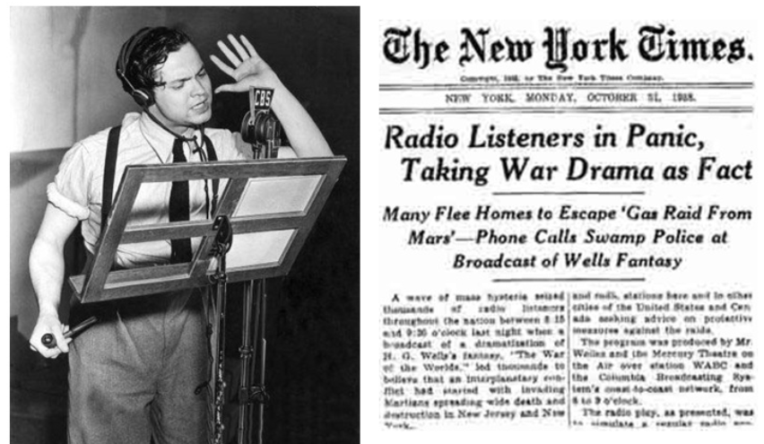
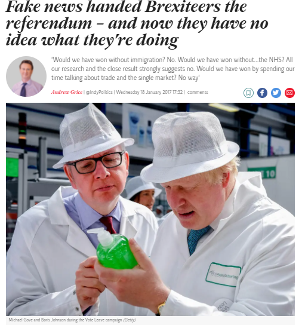
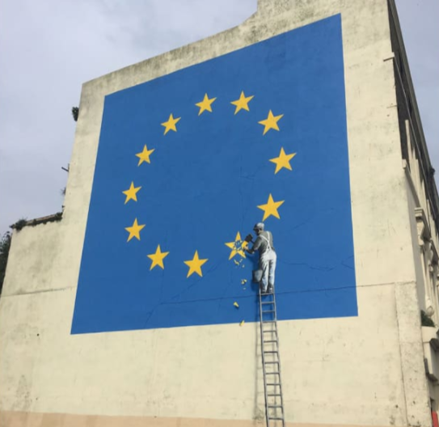
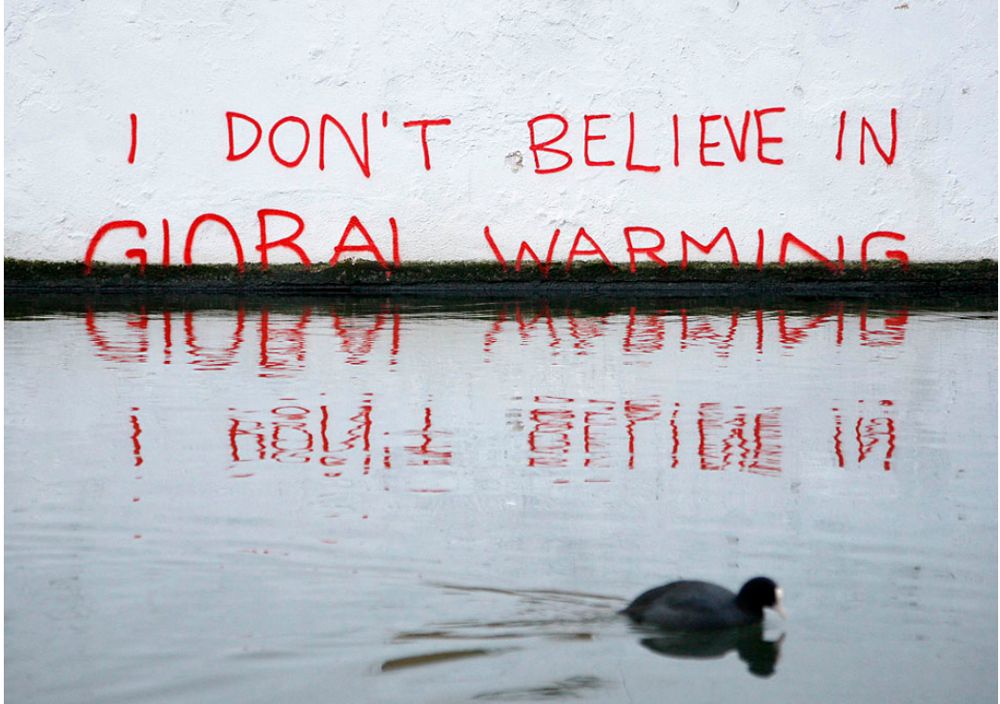
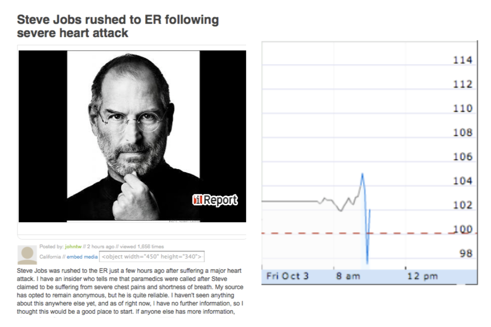
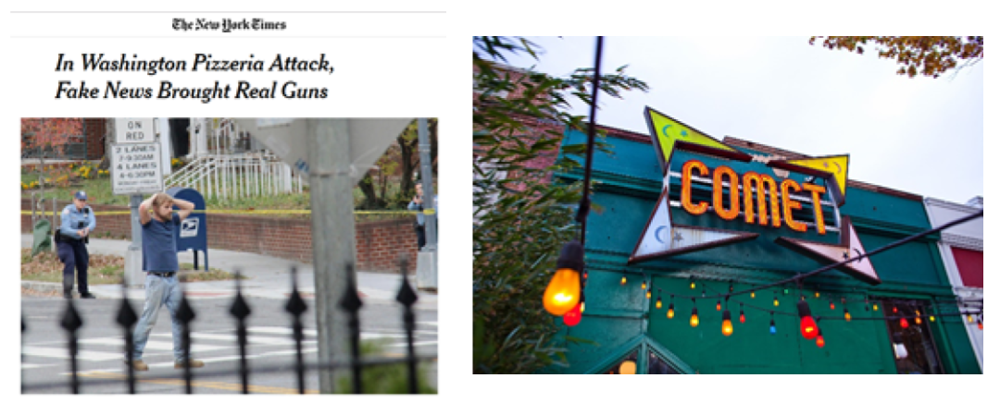
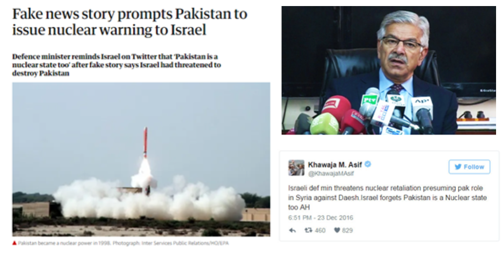
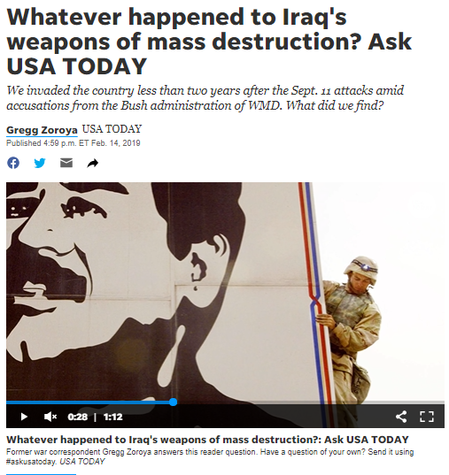
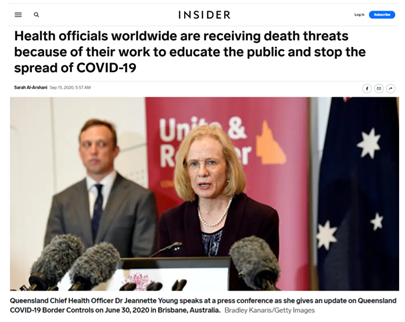
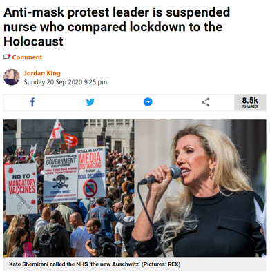

Za udeležence
Za izvajalce
Trainees Edition
Trainers Edition
MODUL 3: VZROKI in POSLEDICE INFORMACIJSKE ONESNAŽENOSTI
Opis modula
Glavni namen tega modula je predstaviti vzroke in posledice informacijske onesnaženosti, da bi povečali ozaveščenost udeležencev izobraževanja o različnih motivih za nastanek informacijskega onesnaževanja in njegovih možnih posledic.
Sekundarni namen je usmerjanje izvajalcev usposabljanja, ki želijo vsebino tega modula uporabiti pri usposabljanju svojih udeležencev.
S temi cilji so v modulu zajeti motivi za ustvarjanje in širjenje lažnih ali zavajajočih informacij ter njihov vpliv na javnost in demokracije, skupaj s smernicami o tem, kako poučevati to temo.
Udeleženci, ki bodo uspešno zaključili ta modul, bodo razumeli/ozavestili:
- namen in motive onesnaževanja z informacij
- posledice onesnaževanja z informacijami
- lastno odgovornosti v boju proti informacijskemu onesnaževanju
Poleg tega bodo izvajalci usposabljanj, ki bodo uspešno zaključili ta modul, lahko pokazali razumevanje smernic za usposabljanje na to temo.
Struktura modula
Ta modul je sestavljen iz naslednjih delov:
- Opis modula (cilji, opis vsebine in učnih rezultatov)
- Struktura modula
- Smernice za udeležence
- Smernice za izvajalce usposabljanja (kako se pripraviti, metode dela)
- Vsebina (študijsko gradivo in vaje)
- Kviz
- Viri (reference in priporočeni viri ter videoposnetki)
Glavni cilji modula, opis vsebine in učni rezultati so pojasnjeni v delu Opis modula. Vsebina vključuje vsa študijska gradiva in vaje, povezane z vsebino. Kviz vključuje vprašanja z več izbirami, s katerimi lahko udeleženci usposabljanja preverijo svoj napredek. Viri imajo dve komponenti: reference in priporočeni viri za nadaljnji študij. Reference so seznam virov, navedenih v vsebinskem delu. Priporočeni viri so sestavljeni iz seznama dodatnih virov in videoposnetkov, ki jih je zelo priporočljivo prebrati in pogledati za nadaljnje učenje o temi. Smernice za udeležence izobraževanja vključujejo navodila in predloge za udeležence izobraževanja. Smernice za izvajalce usposabljanja vodijo izvajalce usposabljanja skozi različne faze usposabljanja in vsebujejo nasvete, ki bi lahko bili koristni pri poučevanju teme.
Smernice za udeležence usposabljanja
Od udeležencev izobraževanja se pričakuje, da preberejo besedilo, natančno preučijo primere, si ogledajo priporočene videoposnetke in rešijo vaje. Za dodatne informacije lahko raziščejo predlagane vire. Po končanem študiju vsebine udeležencem priporočamo, da rešijo kviz, s katerim bodo ocenili svoj napredek. Študijsko gradivo lahko popravijo, kadar in če je to potrebno.
Smernice za izvajalce
Smernice za izobraževalce vključujejo predloge in nasvete o tem, kako predstaviti vsebino tega modula odraslim.
Priprava
Priporočamo pripravo predstavitve (PowerPoint/Prezi/Canva), obogatene z vizualnim gradivom (slike in videoposnetki) in jasnimi primeri. Predlagamo tudi, da primere in vaje iz tega modula prilagodite vprašanjem, ki so bolj znana dejanski ciljni skupini. Izbira lokalnih primerov (specifičnih za posamezno državo) v zvezi z aktualnimi ali dobro znanimi vprašanji pomaga jasneje ponazoriti določeno točko. Prav tako pomaga pritegniti pozornost udeležencev usposabljanja. Bolj kot so primeri znani in priljubljeni, bolje bo sporočilo posredovano. Lokalne (nacionalne) platforme za preverjanje dejstev so lahko dober vir za širok nabor novic/primerov, ki so že preverjeni in označeni.
Kako začeti
Na začetku lahko uporabite kratek kviz (3 do 5 vprašanj) v programu Kahoot ali vprašanja z Mentimetrom, da udeležence pritegnete k temi. Uporablja se lahko kot motivacijsko orodje in tudi kot orodje za preverjanje obstoječega znanja udeležencev o temi.
Učne metode
Med usposabljanjem se lahko kombinirajo različne učne metode. Na primer:
- predavanje
- diskusija
- delo v skupinah
- samorefleksija
Nasveti za izobraževalca
Ogrevanje
Učinkovit način vključevanja udeležencev in določanja skupnih pričakovanj o tem, kaj se bodo naučili, je postaviti nekaj predhodnih vprašanj o temi. Udeležence lahko na primer vprašate:
- Kdo širi napačne informacije.
- Zakaj ljudje širijo lažne informacije.
- Navedite primer resnih posledic dezinformacije, na katero ste naleteli.
- Ste kdaj delili napačne informacije? Če da, kakšen je bil vaš namen in motivacija?
Po razpravi se prepričajte, da so udeleženci usposabljanja sposobni razumeti namen in razlikovati glavne motive za ustvarjanje in razširjanje napačnih in zavajajočih informacij. Udeleženci usposabljanja naj tudi razumejo, da ima informacijsko onesnaženje vedno določene posledice in da so ljudje, ki ustvarjajo in/ali širijo napačne/ zavajajoče informacije, odgovorni za njihove posledice.
Predstavitev učnih ciljev
Jasno je treba opredeliti cilj učne ure (informiranje o vzrokih in posledicah onesnaževanja z informacijami). Po ogrevalnih vprašanjih bo lažje pojasniti cilje.
Predstavitev učnih vsebin
Med predstavljanjem vsebine poskrbite za interakcijo z udeleženci in jih spodbujajte k aktivnemu sodelovanju.
- Preden podate pregled motivov za onesnaževanje informacij, udeležence prosite, naj podrobneje predstavijo možne vzroke.
- Pri navajanju primerov izberite primere iz resničnega sveta in pridobite čim več osnovnih informacij o konkretnem primeru, ki ga predstavljate.
- Ko izbirate primere, se prepričajte, da so motivi in posledice znani ali pa jih je mogoče jasno opredeliti. V nekaterih primerih je lahko glavna motivacija zabrisana.
- Navedite nekaj primerov dezinformacij (če ne gre za primere iz resničnega sveta, lahko napišete nekaj scenarijev) s podrobnostmi in prosite udeležence, naj podrobneje pojasnijo njihov namen in morebitno motivacijo.
- Navedite nekaj primerov dezinformacij (če ne gre za primere iz resničnega sveta, lahko napišete nekaj scenarijev) s podrobnostmi in prosite udeležence, naj podrobneje opišejo možne učinke (posledice).
Zaključek
Naredite kratek povzetek učne ure in postavite nekaj vprašanj, ki poudarjajo najpomembnejša sporočila, ki jih poskušate podati.
- Prosite udeležence usposabljanja, naj opišejo informacijo, s katero so se srečali in ki se je sprva zdela neškodljiva, pozneje pa se je izkazalo, da povzroča resne težave.
- udeležence usposabljanja vprašajte, zakaj je pomembno razlikovati med zanesljivimi in zavajajočimi informacijami? (Zlasti v kontekstu politike in javnega zdravja).
Po razpravi se prepričajte, da so udeleženci usposabljanja sposobni razumeti glavne motive za širjenje dezinformacij in njihove posledice. Udeleženci usposabljanja morajo tudi razumeti, da je stopnja škode, ki jo lahko povzročijo napačne informacije, lahko različna, vendar je za posledice odgovoren vsak, ki jih deli.
Vsebina: Vzroki in posledice informacijske onesnaženosti
Uvod
Razumevanje namena in motivacije informacijske onesnaženosti je pomembno za boj proti njej. Za pripravo in razširjanjem lažnih ali zavajajočih vsebin stojijo različni nameni in motivi. Kot je bilo omenjeno v modulu 2, se na primer dezinformacije (lažne vsebine) in zlonamerne informacije (prave) delijo namerno, da bi povzročile škodo (finančno, politično ali celo fizično), medtem ko lažne informacije (lažne vsebine) ne pomenijo škode, lahko pa jo povzročijo nenamerno (Wardle, 2020). Ne glede na to, ali je onesnaževanje z informacijami namerno ali ne, ima vedno določene posledice.
Razumevanje motivacije
Za ustvarjanje lažnih in zavajajočih vsebin obstajajo štirje glavni motivi: Prvi je ideološki (predvsem politični). Lažne ali zavajajoče vsebine se uporabljajo za propagando, prepričevanje, odvračanje pozornosti in/ali provokacijo. Gonilna sila pri tem je predvsem oblikovanje in vplivanje na javno mnenje ter spodbujanje določenih idej, ideologije, stranke ali ljudi (Allcott in Gentzkow 2017, str. 217; Cooke, 2018; Wardle, 2020). Drugi je finančni. Z oglaševanjem na spletnem mestu je mogoče zaslužiti s senzacionalnim ali lažnim člankom, naslovom ali sliko. Pri tem se kliki na oglase spodbujajo k ustvarjanju prihodkov. Lažne ali pristranske vsebine se ustvarjajo tudi za promocijo določenih izdelkov ali storitev, medtem ko včasih diskreditirajo druge (Allcott in Gentzkow, 2017, str. 217; Wardle, 2020). Tretji je socialni in/ali psihološki. Nekatere ljudi motivira zgolj želja po povzročanju težav. Radi bi videli, ali lahko preslepijo novinarje ali provocirajo ljudi. Nekateri pa delijo napačne informacije, da bi predstavili določeno identiteto (Wardle, 2020). Potreba po tem, da bi bili všeč nekomu, po takojšnjem zadovoljstvu in pozornosti na družbenih omrežjih, so med psihološkimi motivi (Cooke, 2018). Zadnji, kot v primeru satire in parodije, sta zabava in humor.
Lažne vsebine so ustvarjene z različnimi nameni in motivi. Tisto, zaradi česar so bolj škodljive, je njihovo razširjanje. Če se lažne vsebine ne bi delile in ne bi dosegle množičnega občinstva, bi naredile manj škode (Wardle, 2020).
Posledice informacijske onesnaženosti
Lažne novice so na internetu zelo razširjene in lahko zavajajo ljudi po vsem svetu. Raziskava iz leta 2016 je pokazala, da »naslovi lažnih novic odrasle Američane zavedejo v približno 75 odstotkih primerov« (Silverman in Singer-Vine 2016). V nekaterih primerih ljudje lažne novice, na katere naletijo, ignorirajo, v nekaterih primerih pa jim verjamejo in lažne novice privedejo do konkretnih dejanj in resnih posledic, kot so vplivanje na rezultate volitev, škodovanje demokracijam, diskreditacija posameznikov, narodov, podjetij in/ali povzročanje panike (Tandoc, 2018, str. 137).
Primeri
Primer 1: Invazija Marsovcev
Dobro znan primer razširjenih napačnih informacij sega v trideseta leta prejšnjega stoletja, ko je množično paniko sprožila oddaja Orsona Wellesa "Vojna svetov". Orson Welles je zgodbo o invaziji Marsovcev pripovedoval v obliki radijskih novic, v katerih so igralci igrali vloge novinarjev, prebivalcev, strokovnjakov in vladnih uradnikov. Čeprav je bil namen zgolj produkcija radijske drame, so jo poslušalci interpretirali kot dejanske novice (Tandoc, 2018, str. 138).

Primer 2: Referendum o Brexitu
Rezultati referenduma o Brexitu v Združenem kraljestvu, predsedniške volitve v ZDA leta 2016, uvrstitev Le Penove v drugi krog francoskih volitev in razveljavitev kenijskih volitev so nekateri primeri potencialne moči sistematičnih dezinformacijskih kampanj, čeprav empirični podatki o natančnem vplivu takih kampanj ne obstajajo (Wardle in Derakhshan, 2017, str. 14).
V primeru referenduma o Brexitu je tisk, ki je podpiral Brexit, zagotovil neprecenljivo podporo s tokom negativnih zgodb (večinoma lažnih) o migrantih in gospodarskem bremenu, ki ga povzroča članstvo v EU. V kampanji o priseljevanju so politiki in tisk trdili, da bi lahko do leta 2030 v Veliko Britanijo prišlo do pet milijonov več migrantov iz EU, ker bi 88 milijonov ljudi dobilo pravico do življenja in dela v Združenem kraljestvu v skladu z načrti EU, da se ji pridružijo Albanija, Makedonija, Črna gora, Srbija in Turčija. Največja lažna novica je bila trditev, da bi izstop iz EU nacionalnemu zdravstvenemu sistemu zagotovil 350 milijonov funtov na teden iz prispevka Združenega kraljestva v blagajno EU (Grice, 18. januar 2017).
|  |  |
Vir: CNN, May 8, 2017 |
Primer 3: Zanikanje podnebnih sprememb
V zadnjih štirih desetletjih si je zelo organizirana in dobro financirana kampanja, ki jo poganja predvsem industrija fosilnih goriv, prizadevala za omaloževanje znanosti, ki globalne podnebne spremembe povezuje s človeškimi emisijami ogljikovega dioksida in drugih toplogrednih plinov. Ta dezinformacijska prizadevanja so povzročila zmedo glede podatkov, postavila pod vprašaj integriteto podnebnih znanstvenikov in zanikala znanstveno soglasje o vlogi človeka (Renowden, 26. februar 2014). Ugotovitve raziskav dokazujejo, da je to napačno razumevanje podnebnih sprememb v javnosti povzročilo manjše sprejemanje resničnosti podnebnih sprememb in manjšo podporo politikam blaženja teh sprememb (Cook, Lewandowsky in Ecker, 2017).
 |
 |
Primer 4: Padec cene delnice družbe Apple
3. oktobra 2008 je plakat iReporta poročal, da so Steva Jobsa po hudem srčnem napadu odpeljali na urgenco. Poročilo je bilo odstranjeno s spletnega mesta iReport, spletnega mesta za državljansko novinarstvo, ki ga je ustvarila CNN, potem ko je Apple to poročilo zanikal. Zgodba je na spletnem mestu ostala le 20 minut (Blodget, 3. oktober 2008). Vendar je zaradi nje cena delnic podjetja padla za 10 % (Chen, Conroy in Rubin, 2015).

Primer 5: Teorija zarote Pizzagate
Leta 2016 je moški s pištolo vstopil v picerijo v Washingtonu v ZDA in izstrelil več strelov. Sam je preiskoval, ali je bila restavracija skrivna podzemna mreža za trgovino z ljudmi, v kateri so sodelovali člani predsedniške kampanje Hillary Clinton, kot so trdili v zgodbah na družbenih omrežjih, ki so se dejansko izkazale za izmišljene (Silverman, 2016).

Vir: The New York Times
Primer 6: Jedrsko opozorilo Izraelu
Pakistanski obrambni minister Khawaja Muhammad Asif je objavil grozeč tvit kot odgovor na lažno poročilo, v katerem je pisalo, da Izrael Pakistanu grozi z jedrskim orožjem (Goldman, 2016).

Primer 7: Orožje za množično uničevanje v Iraku
Številni Američani so podprli vojno v Iraku na podlagi dezinformacij in trditev o povezavah med Irakom in Al Kaido ter prisotnosti orožja za množično uničevanje (Saunders, 2013).

Primer 8: Napad na stolnico ZDA
6. januarja 2020, ko so se javni uslužbenci sestali, da bi potrdili zmago Joeja Bidena na predsedniških volitvah, so podporniki Donalda Trumpa, ki so bili združeni okoli skupne laži, da so bile volitve nezakonito ukradene Trumpu, vdrli v Kapitol, kar je povzročilo izgred, v katerem je umrlo pet ljudi (Hemsley, 2021). Na stotine ljudi je bilo poškodovanih, več kot 300 ljudi pa je bilo obtoženih zveznih kaznivih dejanj (Mendoza in Linderman, 2021). Stroški odprave škode po napadu na ameriški Kapitol in s tem povezani stroški varnosti so se povzpeli na milijone dolarjev (Chappel, 2021).
Vir: Wikipedia |
Primer 9: Grožnje s smrtjo zdravstvenim uslužbencem
Med izbruhom COVID-19 so se po spletu razširile teorije zarote, ki so ogrožale življenja. Teorije zarote, ki niso povezane s COVID-19 (npr. fluorid, chemtrails, 5G, proizvodnja v laboratoriju), so se začele takoj po izbruhu pandemije. Lažne trditve o tehnologiji 5G so spodbudile požige telefonskih drogov in napade na telekomunikacijske delavce. Zabeležene so bile množične zastrupitve in preveliki odmerki hidroksiklorokvina – zdravila, za katero svetovni voditelji, kot sta Donald Trump in Jair Bolsonaro, lažno trdijo, da zdravi ali preprečuje COVID-19 (Spring, 26. december 2020).
Po vsem svetu so zdravstveni uradniki po izdaji ukrepov za ravnanje s koronavirusom prejeli grožnje s smrtjo. Dr. Anthony Fauci, strokovnjak za nalezljive bolezni, je prejel grožnje s smrtjo, ker je med drugim svetoval ukrepe za socialno distanciranje, razširjeno testiranje in sledenje stikov, da bi zajezili širjenje koronavirusa v ZDA. V Avstraliji so grozili tudi glavni zdravstveni delavki Queenslanda, Jeannett Young. Ko je Youngova zaprla meje Queenslanda s sosednjimi zveznimi državami, je bila pred njeno hišo nameščena policija. V Nemčiji so strokovnjakom, kot sta Karl Lauterbach in Christian Drosten, grozili s smrtjo, potem ko je država spomladi uvedla zaprtje in zaprla šole. Od začetka pandemije januarja 2020 je več deset uradnikov s področja javnega zdravja odstopilo, dalo odpoved ali se upokojilo (Al-Arshani, 15. september 2020).

Primer 10: Zanikanje koronavirusa s strani vplivnice
Novopečeni vplivneži so si s spodbujanjem neutemeljenih trditev o pandemiji na spletu pridobili ogromno sledilcev. Kate Shemirani, vodja britanske skupnosti zarotnikov, je z lažnimi trditvami – med drugim z zanikanjem obstoja koronavirusa, pri čemer je za simptome COVID-19 okrivila radijske valove 5G – zbrala več deset tisoč sledilcev. Na protestih v Londonu je govorila večtisočglavi množici. Njen sin Sebastian Shemirani je stopil v stik z BBC-jem zaradi strahu pred vplivom njegove matere na javno zdravje (Spring, 26. december 2020).

Vaje
Vaja 1
Razložite možne učinke/posledice zanikanja dezinformacij o globalnih podnebnih spremembah.
Vaja 2
Razdelajte možne učinke/posledice lažnih trditev o zdravilih za COVID-19.
Vaja 3
Kviz
Reference
Al-Arshani, S. (September 15, 2020). Health officials worldwide are receiving death threats because of their work to educate the public and stop the spread of Covid-19. Insider.
Allcott, H. & Gentzkow, M. (2017). Social media and fake news in the 2016 election. Journal of Economic Perspectives, 31(2), 211–236. doi:10.1257/jep.31.2.211.
Blodget, H. (October 3, 2008). Apple denies Steve Jobs heart attack report: “It is not true”. Insider.
Chappel, B. (February 24, 2021). Architect Of The Capitol Outlines $30 Million in Damages From Pro-Trump Riot. NPR News.
Chen, Y., Conroy, N.J. & Rubin, V.L. (2015). Misleading online content: Recognizing clickbait as ‘false news’.” In Proceedings of the 2015 ACM on Workshop on Multimodal Deception Detection, Seattle, Washington, USA: ACM.
Cook, J., Lewandowsky, S., Ecker, U.K.H. (2017). Neutralizing misinformation through inoculation: Exposing misleading argumentation techniques reduces their influence. PLOS ONE 12(5): e0175799.
CNN (May 8, 2017). New Banksy Brexit mural unveiled on day of French vote. CNN.
Cooke, N. (2018). Fake news and alternative facts: Information literacy in a post-truth era. ALA.
Goldman, R. (2016). Reading Fake News, Pakistani Minister Directs Nuclear Threat at Israel. The New York Times. Available at:
Graham-Harrison, E. (December 25, 2016). Fake news story prompts Pakistan to issue nuclear warning to Israel. The Guardian.
Gramling, C. (May 18, 2021). Climate change disinformation is evolving. So are efforts to fight back. Science News.
Grice, A. (January 18, 2017). Fake news handed Brexiteers the referendum – and now they have no idea what they're doing. The Independent.
Hemsley, J. (February 8, 2021). When Fake News Turns Into Conspiracy Theories: The viral factor in today’s media landscape, and what we can do to stop it.
King, J. (September 20, 2020). Anti-mask protest leader is suspended nurse who compared lockdown to the Holocaust. Metro.
Mendoza, M. & Linderman, J. (March 5, 2021). Chaos of U.S. Capitol riot that left 5 people dead revealed. Global News. Available at:
Renowden, G. (February 26, 2014). Investigating climate change deniers and their spin against global warming. The Daily Blog.
Sandberg, M. (October 31, 2013). Historic Storytelling: Orson Welles scares the nation.
Saunders, L. (2013). Information as weapon: Propaganda, politics, and the role of libraries. In Mueller, D. M. (Ed.). Imagine, Innovate, Inspire: The Proceedings of the ACRL 2013 Conference, Indianapolis, IN: ACRL.
Silverman, C. & Singer-Vine, J. (2016). Most Americans who see fake news believe it, new survey says. Buzzfeed Poll About Fake News.
Silverman, C. (2016). Here are 50 of the Biggest Fake News Hits on Facebook from 2016. BuzzFeed.
Spring, M. (December 26, 2020). The casualties of this year's viral conspiracy theories. BBC News.
Tandoc, E.C., Lim, Z. W. & Ling, R. (2018). Defining “fake news”. Digital Journalism, 6(2), 137-153. DOI: 10.1080/21670811.2017.1360143
Wardle, C. & Derakhshan, H. (2017). Information disorder: Toward an interdisciplinary framework for research and policymaking. The Council of Europe.
Wardle, C. (2020). The Age of information disorder. In C. Silverman (Ed.). Verification Handbook for Disinformation and Media Manipulation, 3rd Ed. European Journalism Centre.
Zoroya, G. (February 14, 2019). Whatever happened to Iraq's weapons of mass destruction? USA Today.
Priporočeni viri
Cooke, N. (2018). Fake news and alternative facts: Information literacy in a post-truth era. ALA. Saunders, L. (2013). Information as weapon: Propaganda, politics, and the role of libraries. In Mueller, D. M. (Ed.). Imagine, Innovate, Inspire: The Proceedings of the ACRL 2013 Conference, Indianapolis, IN: ACRL.
Silverman, C. (2016). Here are 50 of the Biggest Fake News Hits on Facebook from 2016. BuzzFeed.
Tandoc, E.C., Lim, Z. W. & Ling, R. (2018). Defining “fake news”. Digital Journalism, 6(2), 137-153. DOI: 10.1080/21670811.2017.1360143.
Turcilo, L. & Obrenovic, M. (2020). Misinformation, disinformation, malinformation: Causes, trends and their influence on democracy. A Publication of Heinrich Boll Foundation.
Wardle, C. (2019). First Draft’s essential guide to understanding information disorder. First Draft.
Wardle, C. (2020). The Age of information disorder. In C. Silverman (Ed.). Verification Handbook for Disinformation and Media Manipulation, 3rd Ed. European Journalism Centre.
Wardle, C. & Derakhshan, H. (2017). Information disorder: Toward an interdisciplinary framework for research and policymaking. The Council of Europe.
Priporočeni videoposnetki
Wardle, C. (2020). The impact of sharing. FirstDraft.